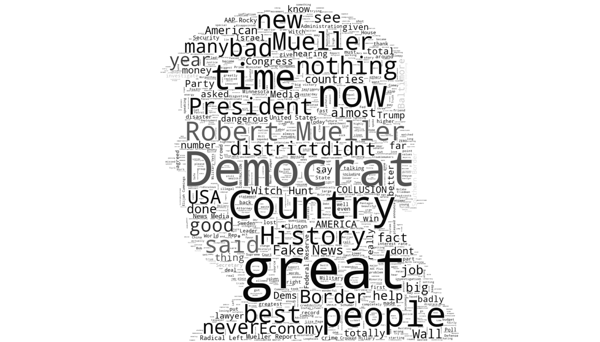

The Political Power of Words

It was the Lebanese-born poet and painter, Kahlil Gibran, who once uttered, "all our words are but crumbs that fall down from the feast of the mind."
They are thoughts thrust into existence. Actions have claimed to speak louder, the pen mightier, but true power continues to lay with the word. In its capacity to inspire and motivate, to denigrate and condemn.
As part of my computer programming course at the PDX Code Guild, we were recently tasked with constructing a project to signal the shift of focus from the back-end to the front-end; from the approachable language of Python to the upcoming structure and artistry of HTML & CSS.